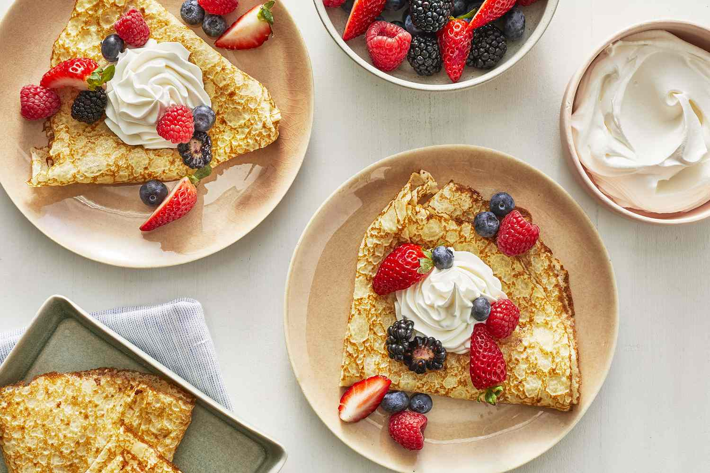

Basic Crepes

Description
What Is a Crêpe?
Crêpes are very thin pancakes. They can be served with a wide variety of sweet and savory fillings and toppings. The breakfast staple dates back to at least 13th-century France.
How to Make Crêpes
Making homemade crêpes is easier than you think. You'll find a detailed ingredient list and step-by-step instructions in the recipe below, but let's go over the basics:
Ingredient
- Flour: These basic French crêpes start with a cup of all-purpose flour.
- Eggs Eggs act as a binder, which means they help hold the batter together.
- Milk: Milk adds moisture and keeps the crêpes tender.
- Water: Water helps thin the batter.
- Salt: A pinch of salt enhances the overall flavor.
- Butter: A pinch of salt enhances the overall flavor.
Steps
- Whisk the flour and eggs.
- Gradually add the milk and water.
- Scoop the batter onto a hot griddle.
- Cook until lightly browned on the bottom.
- Flip and continue cooking until done on both sides.